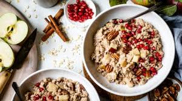

Super Porridge

How to make a breakfast porridge full of goodness
This recipe explains how to make a porridge in the morning which will set you up for the whole day.
Ingredients
- thick cut oats
- milk
- apple
- salt
- cinnamon
- peanut butter
- honey
- dried fruits and/or nuts
Steps
- Add 2 cups of milk to the pan on medium heat
- Add 2 cups of oats to the milk
- Add 1 chopped up apple
- Add half a tablespoon of salt
- Add cinnamon to taste
- Add 1 heaped tablespoon of peanut butter
- Remove from pan once desired consistency and serve
- Add dried fruits, nuts, or honey to taste
Important: Do not cook on high heat, and stir to avoid sticking to pan